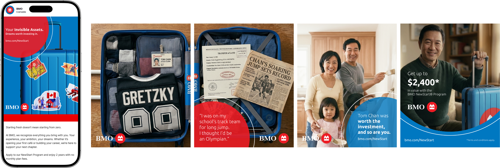
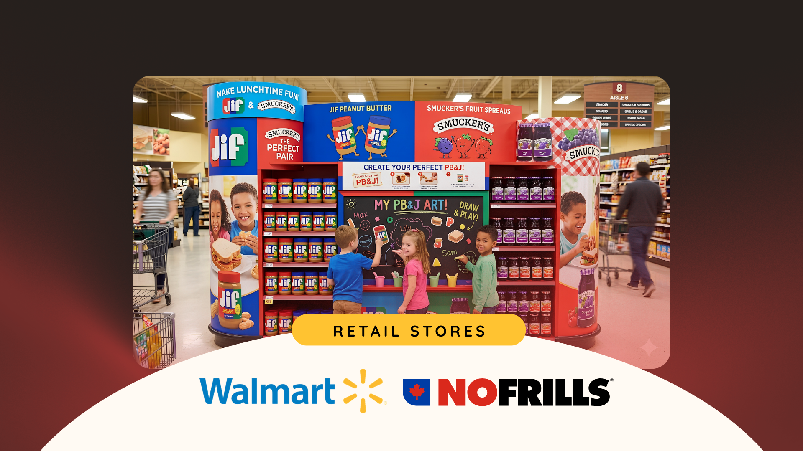
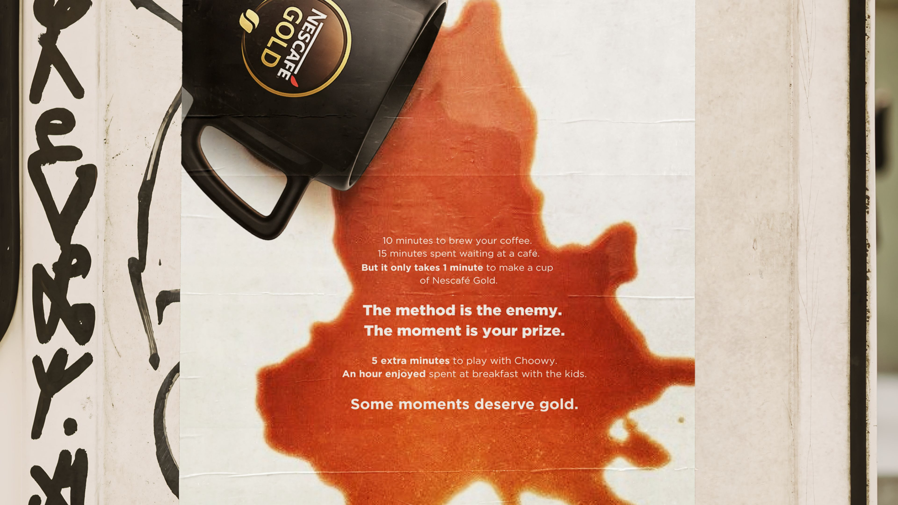
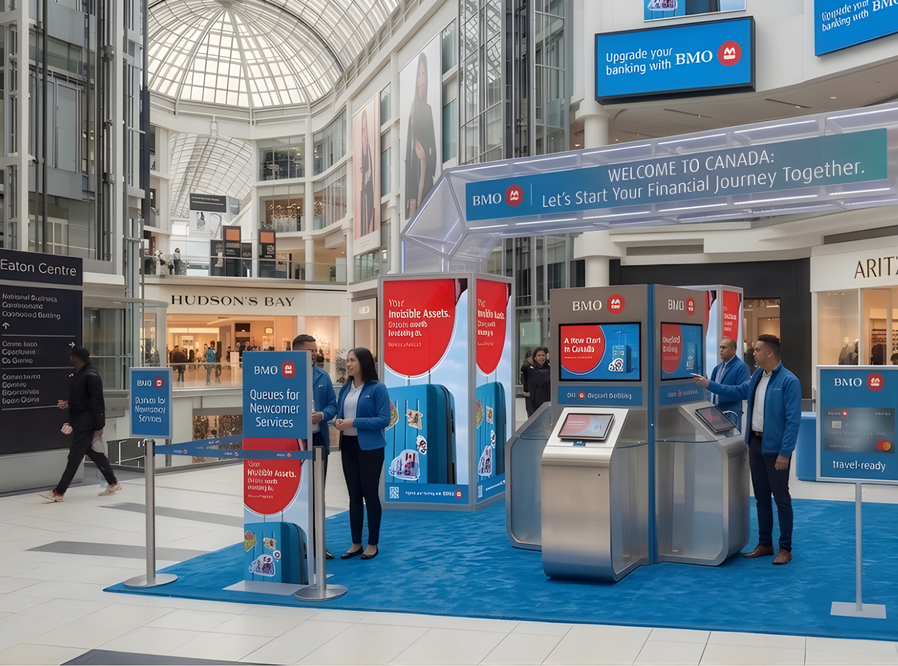
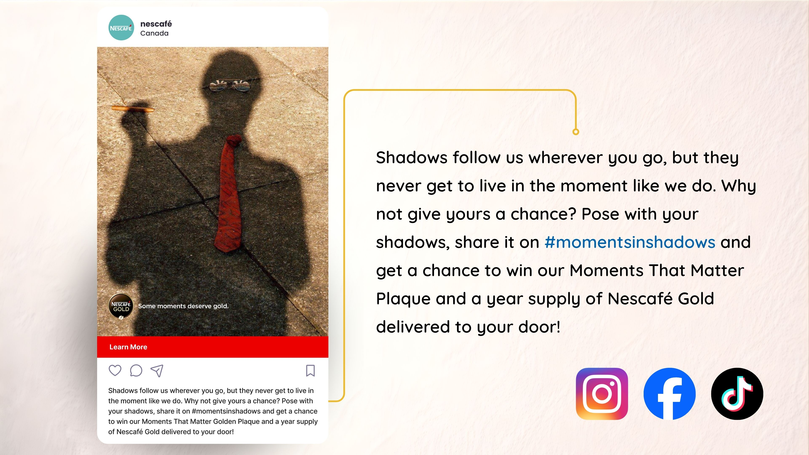
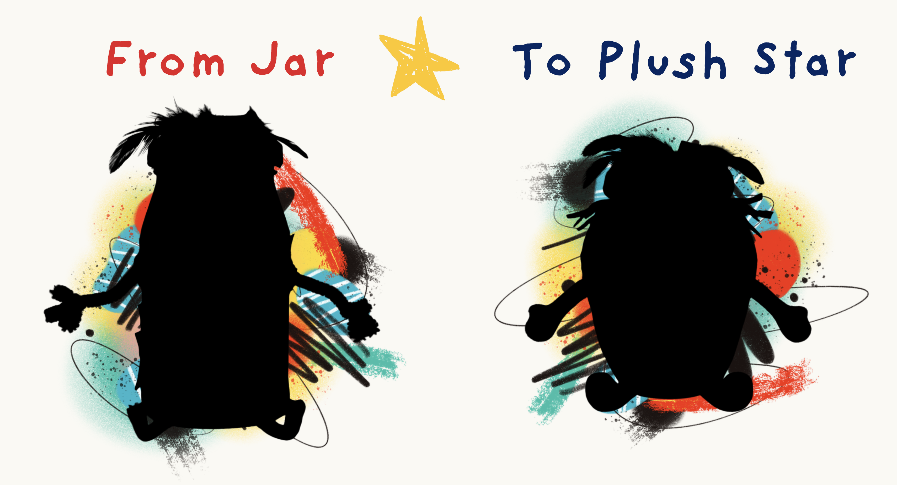
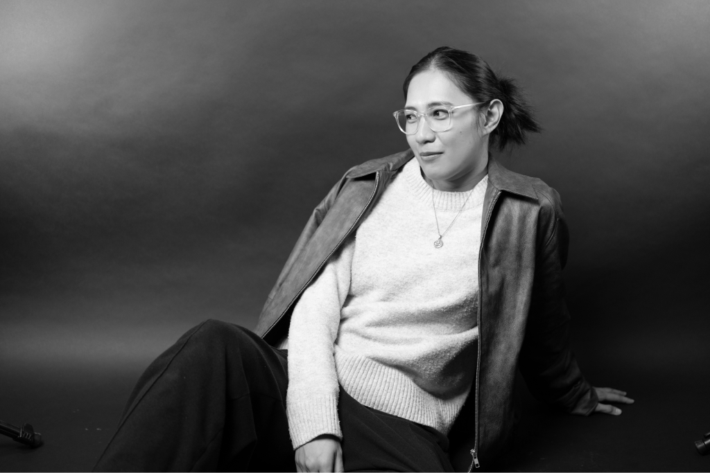
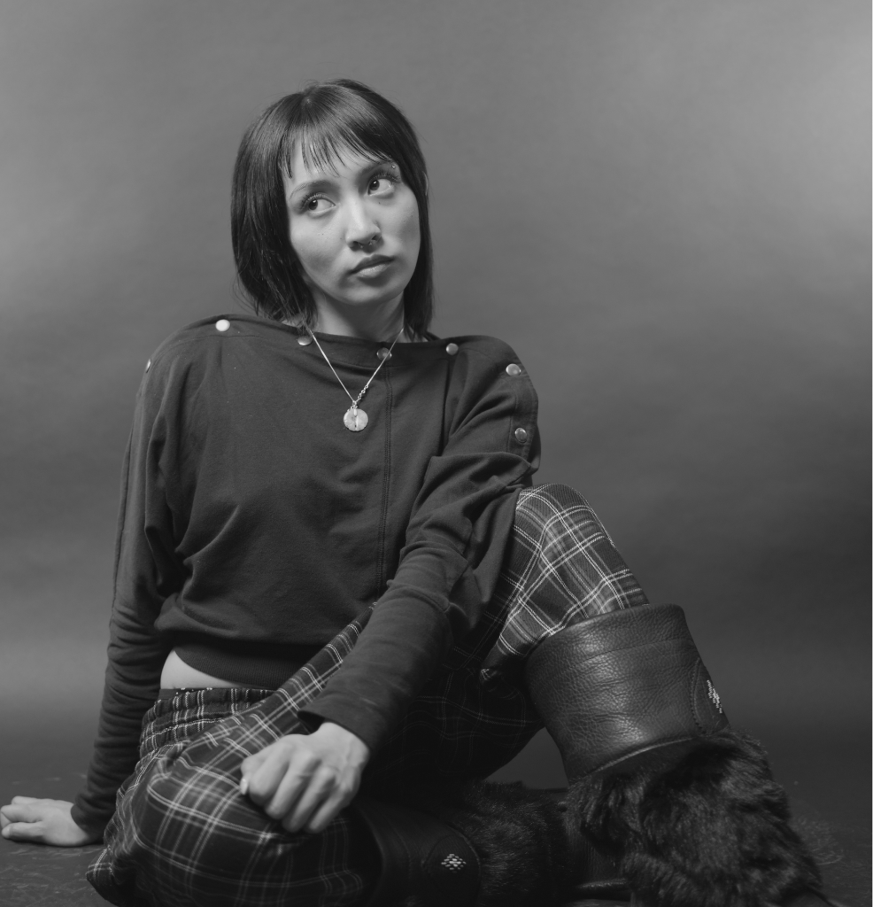

Invisible Assets
We reframed the category’s tone of pity into a rally of encouragement—recognizing the education, ambition and grit newcomers already carry.
View case study ↗Christine Uy and Nicole Chan are a strategic creative team turning human truths into integrated campaigns people actually want to notice.
See theSelected work · 01—03
We reframed the category’s tone of pity into a rally of encouragement—recognizing the education, ambition and grit newcomers already carry.
View case study ↗Don’t toss the jar. Create with it. A family creativity platform that turns everyday packaging into characters, stories and one real plush toy.
View case study ↗In a culture optimized for speed, we gave Nescafé Gold a premium role: protecting the simple pleasures worth slowing down for.
View case study ↗Experiments, extensions & details






The team
In the last semester of their advertising program, Christine and Nicole found a natural rhythm that became a creative partnership. Christine brings artful direction; Nicole brings a versatile arsenal of words. Together, they make fresh, strategic ideas with unmistakable finesse.
Their student work has earned multiple IMC awards and recognition from Leo Burnett, TBWA and Courage Inc. Off the clock, find them holed up in a café or singing passionately in a karaoke room for four hours.

Art Director

Copywriter
Toronto, Canada · Available for opportunities